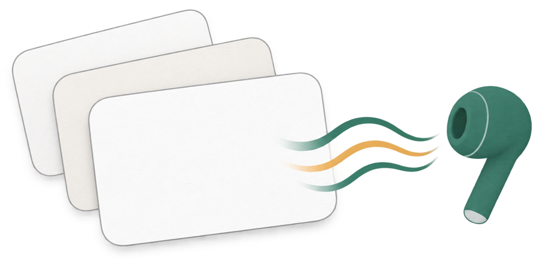

iPhone 向け・聞き流し暗記カード
問いと答えを入れたら、
あとは耳で覚える。
「ききおぼえ」は、自分で作った問いと答えのカードを、問い → 考える間 → 答え の順に読み上げるアプリです。通勤の電車で、食器を洗いながら、布団に入ってから。目と手を使わずに、覚えたいことを何度でも回せます。
App Store で見る（準備中）iPhone 専用の有料アプリです。一度買えば、すべての機能が使えます。あとからお金はかかりません。広告もありません。

こんな困りごとのために作りました
止めると最初に戻ってしまう
止めたところを、帳ごとに覚えておきます。次はホームの「続きから流す」を押すだけ。何百枚あっても、ランダムで流していても、同じところから続きます。
寝落ちしても流れ続ける
おやすみタイマーで、10・20・30・60分か、1周したところで止まります。
漢字の読みを間違える
「消化管」「終価」のような言葉は、カードに読み（ひらがな）を入れると、その通りに読みます。画面には元の文字が出たままです。
1枚ずつ入れるのが大変
Excel・Numbers・Google スプレッドシートの表をコピーして貼り付けるだけで、何百枚でもまとめて入ります。CSV の読みこみと書き出しもできます。
答えだけ聞きたい・同じカードをくり返したい
問い → 答え／答えだけ／問いだけ、1枚を何回、を選べます。
帳をまたいでランダムに流したい
何冊でも選んで、まとめて順に・ランダムに・苦手の印のカードだけ流せます。
ききおぼえの流れ
帳をつくる
覚えたいことを「問い」と「答え」のカードにします。表から貼り付けても、見本の帳から始めてもかまいません。
流し方を決める
流す帳・読むところ・順番・考える間・速さ・おやすみタイマーを選んで「流す」。
画面を消して聞く
ロック画面とイヤホンのボタンで、止める・前・次。Siri の「ききおぼえで続きを流す」でも始められます。
苦手に印を付ける
覚えにくいカードに印を付けて、印のカードだけを流せます。
できること
| 読み上げ | 問い → 考える間 → 答え。答えだけ・問いだけ。1枚を1〜5回。考える間とカードのあいだは0〜10秒、速さは0.5〜2倍 |
|---|---|
| 流す範囲 | 帳を何冊でも。順に・ランダム・苦手の印のカードだけ。止めたところから続きを流す |
| おやすみタイマー | 10・20・30・60分、または1周で止める |
| 読む声 | かな・漢字は日本語、ハングルは韓国語のように文字から決めます。帳ごとに「問いは英語・答えは日本語」のように決めることもできます。iPhone に入っている声で読みます |
| 読み | カードに読みを入れると、その通りに読みます。編集の画面ですぐに確かめられます |
| 入れる・出す | 表計算からの貼り付け、CSV（UTF-8・Shift_JIS）の読みこみ、CSV の書き出し |
| 操作 | ロック画面・イヤホンのボタン、Siri・ショートカット・アクションボタン（続きから流す・止める） |
| 同期 | 帳とカードは、あなたの iCloud で同じ Apple アカウントの iPhone と同期します。機種変更しても残ります |
| iPhone Duo | 開いて横にすると、左に今のカード、右に流す順を並べます |
| 広告・課金・登録 | 広告なし・アプリ内課金なし・アカウント登録なし。開発者はデータを集めません |
よくある質問
ネットにつながっていなくても使えますか
使えます。読み上げは iPhone の中で行います。iCloud の同期は、つながったときに行われます。
英語や韓国語も読めますか
iPhone に入っている声で、英語・韓国語・中国語・スペイン語・フランス語などを読みます。設定 → アクセシビリティ → 読み上げコンテンツ → 声 で、言葉ごとに「拡張」や「プレミアム」の声を入れると、なめらかになります。
機種変更したら帳はどうなりますか
帳とカードはあなたの iCloud にあります。新しい iPhone で同じ Apple アカウントにサインインしていれば、そのまま使えます。CSV に書き出して残しておくこともできます。
返金はできますか
返金は Apple の規定に従います。reportaproblem.apple.com からお申し出ください。開発者が直接返金することはできません。
使い方のくわしい説明は 使い方とお問い合わせ にあります。
お問い合わせ
不具合や気になることがあれば、ryo.tsuzukihashi@tsuzukit.com までご連絡ください。作っているのは個人開発者の續橋涼（TsuzuKit）です。